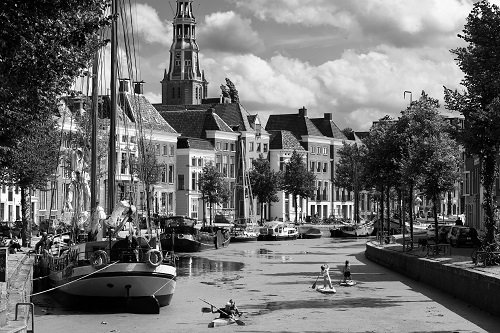

Groningen
Groningen is a city in the north of the Netherlands. It's the city I was born and raised in. It is here that I started working in professional kitchens.
I have been a chef for more than 20 years. I have worked in many different cities. I'm going to write a few stories about what happened in those places. I'm also a amateur photographer. On my website you can see a few of them.
Groningen is a city in the north of the Netherlands. It's the city I was born and raised in. It is here that I started working in professional kitchens.
I was asked to become the private chef of the European Ambassador in Prague. I had to cook for the family and all the official entertainment being held at the residence.
I worked and lived in Ghent for over 20 years together with my wife and daughter. Here I had my own Cajun food restaurant close to the city center.